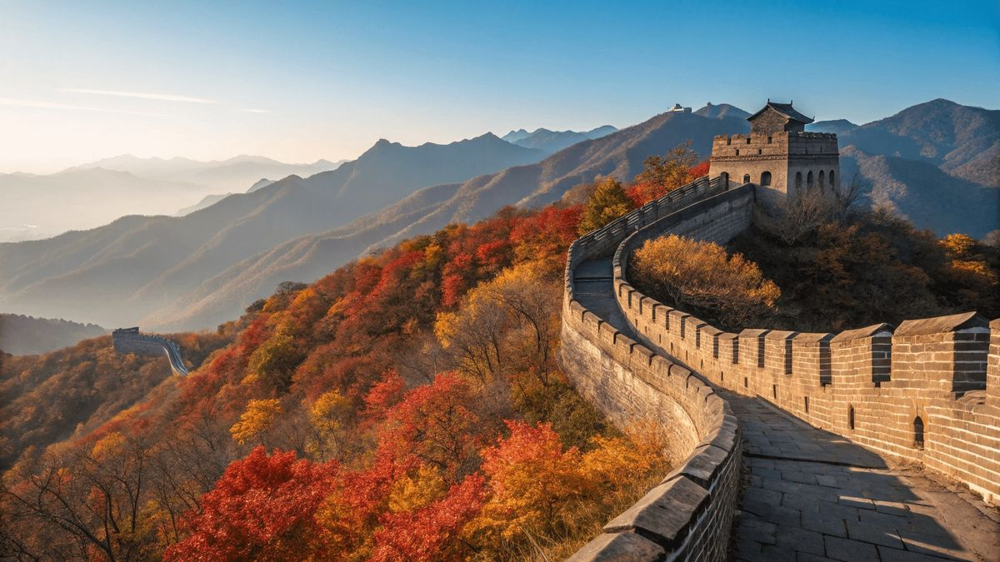
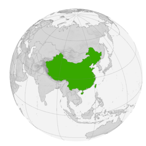
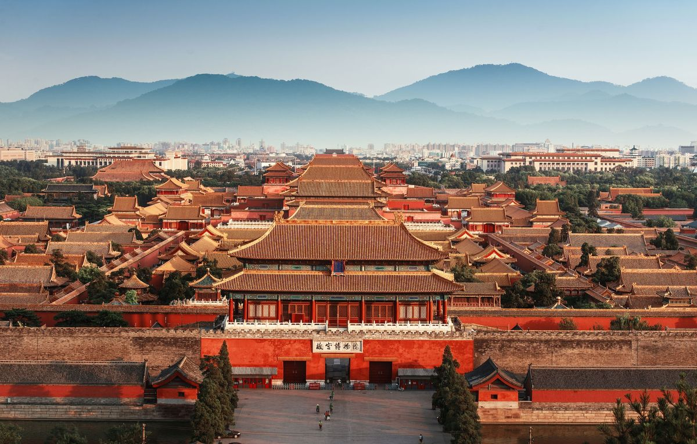
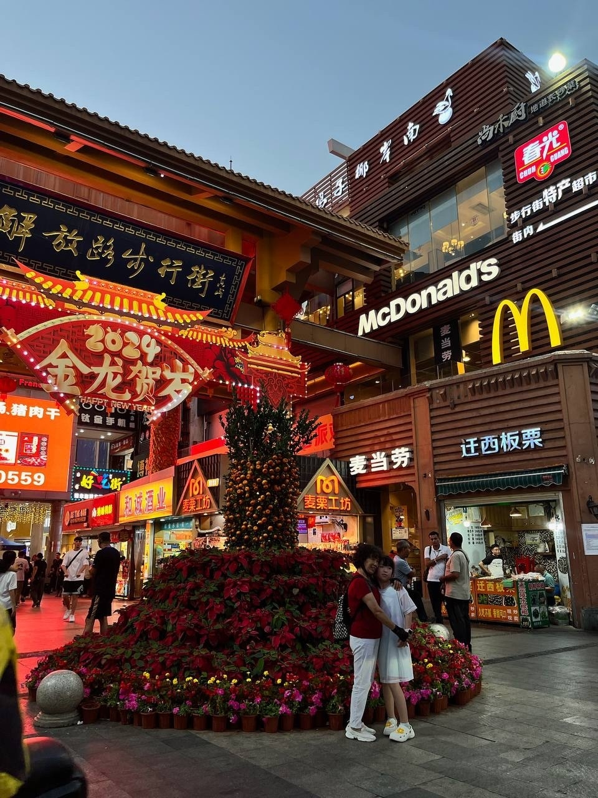
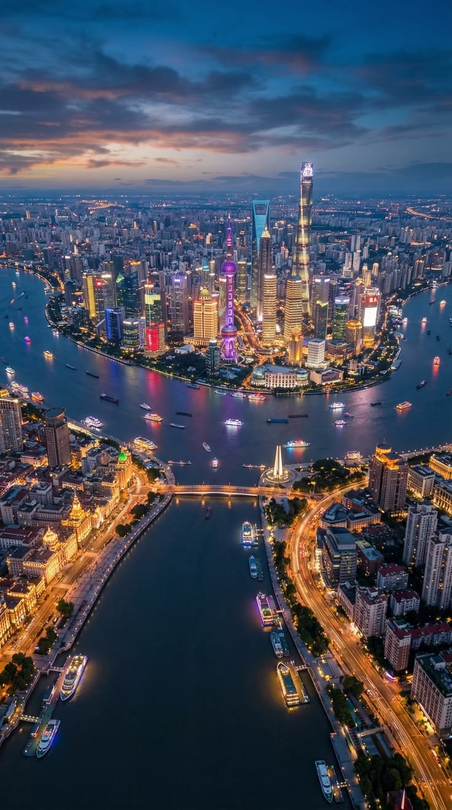
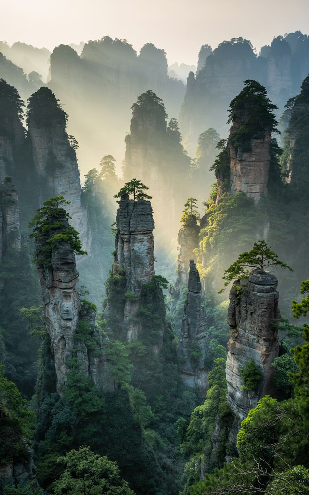
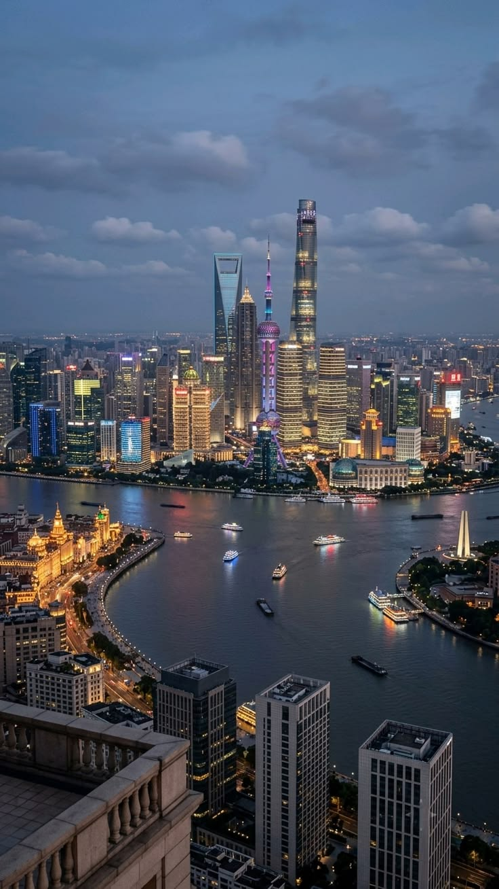
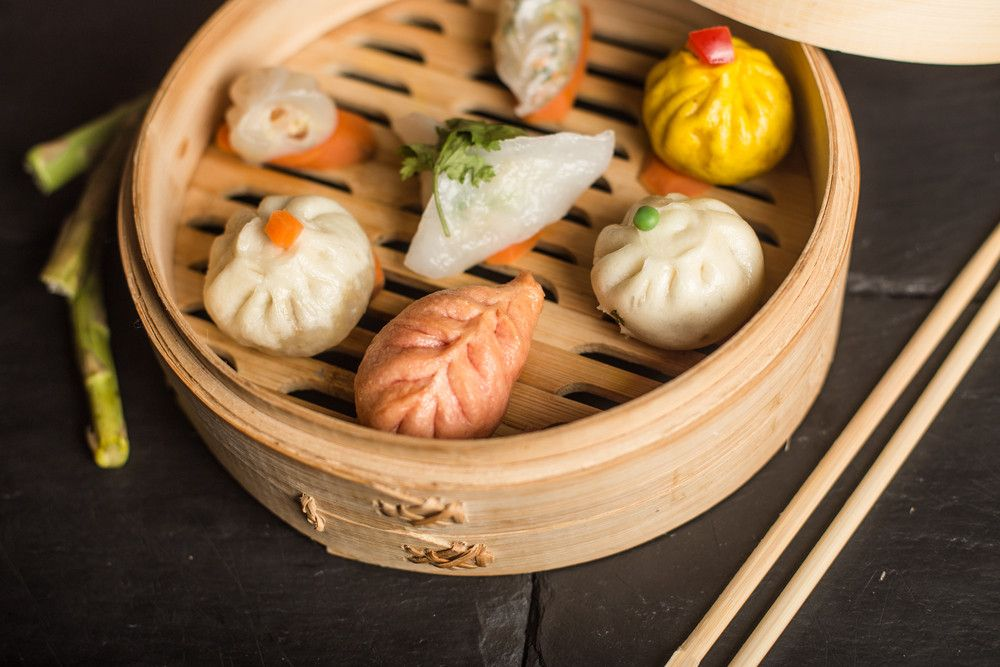
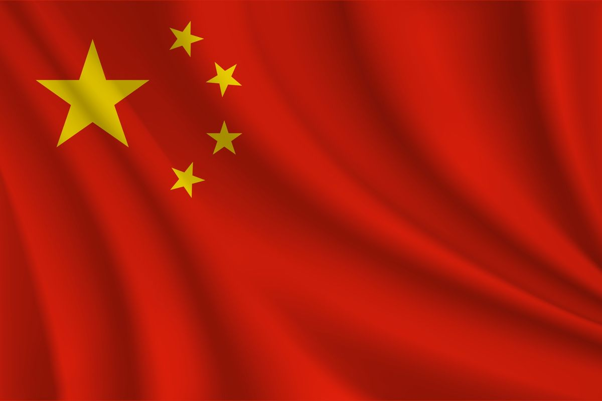

Китай
Одна из древнейших непрерывных цивилизаций планеты — от Великой стены и Запретного города до небоскрёбов Шанхая и рисовых террас
Китай — одна из немногих цивилизаций мира с непрерывной письменной историей длиной более трёх тысячелетий. Здесь древние императорские дворцы соседствуют с одними из самых высоких небоскрёбов планеты, а рисовые террасы юга — с пустынями и высокогорьями запада. Откройте Китай и узнайте, как страна, подарившая миру бумагу, порох, компас и книгопечатание, стала второй по величине экономикой мира.
Китай на карте мира

Китай расположен в Восточной Азии и является одной из крупнейших стран мира.
Один часовой пояс на всю страну: хотя территория Китая по ширине сопоставима с США, вся страна официально живёт по единому пекинскому времени UTC+8 — из-за этого на западе страны солнце в разгар лета встаёт лишь около 10 утра.
С кем граничит Китай
У Китая больше сухопутных соседей, чем у любой другой страны мира, кроме России:
Моря вокруг страны
Наведи курсор на карточку, чтобы узнать больше о каждом побережье:
Жёлтое море
Между северо-восточным Китаем и Корейским полуостровом
Восточно-Китайское море
У побережья Шанхая и провинции Чжэцзян
Южно-Китайское море
Тропическое побережье южного Китая, включая остров Хайнань
Бохайский залив
Внутреннее море у берегов Пекина и Тяньцзиня
Общие сведения
Площадь
9 596 960 км² (4-я в мире)
% водной поверхности
~2,8 %
Население
~1,41 млрд чел. (2-е)
Плотность
~150 чел./км²
Столица
Пекин
Форма правления
Однопартийная социалистическая республика во главе с КПК
Официальный язык
Путунхуа (стандартный китайский)
Председатель КНР
Избирается на 5 года
Названия жителей
Китайцы
Валовой Внутренний Продукт
На душу населения
~13 000 долл.
Итого
~18 трлн
Валюта
юань, женьминьби (CNY)
Телефонный код
+86
Часовой пояс
UTC+8
Интерактивная карта регионов
Наведи курсор на плитку — появится административный центр региона и любопытный факт о нём. Кнопки ниже подсвечивают целую макрозону страны. Тайвань на карте не отмечен как регион КНР — фактический контроль над островом Пекин не осуществляет, а его статус остаётся предметом международного спора.
Наведите курсор на любую плитку карты — здесь появится административный центр региона и интересный факт о нём.
Один день в Китае
Представьте, что сегодня вы проснулись где-то в Китае. Как может выглядеть ваш идеальный день?

Доброе утро, Пекин
Начните день, как местные — паровыми булочками баоцзы и тёплым соевым молоком у уличного лотка рядом с парком, где по утрам занимаются тайцзицюань.
📍 Пекин
Дворцы императоров
Прогуляйтесь по Запретному городу — крупнейшему дворцовому комплексу мира, который почти 500 лет был домом китайских императоров.
📍 Запретный город, Пекин
Прогулка по Хайнань
Прогуляйтесь по древним улицам Санья, где история встречается с современным городом. Полюбуйтесь традиционной архитектурой, загляните в уютные магазины и попробуйте местные уличные блюда.
📍 Санья
Огни Шанхая
Завершите день на набережной Вайтань, откуда открывается вид на футуристичный небоскрёбный район Пудун на другом берегу реки Хуанпу.
📍 Вайтань, ШанхайСамые красивые места
 Великая Китайская стена
Великая Китайская стена
Крупнейшее оборонительное сооружение в истории человечества протяжённостью более 21 000 км.
 Запретный город
Запретный город
Дворцовый комплекс из 980 зданий в центре Пекина, крупнейший сохранившийся деревянный дворцовый ансамбль мира.
 Пейзажи Гуйлиня
Пейзажи Гуйлиня
Причудливые известняковые холмы вдоль реки Ли, знакомые всему миру по изображению на банкноте.
 Терракотовая армия
Терракотовая армия
Более 8000 глиняных воинов в натуральную величину, охраняющих гробницу первого императора Китая.

ЧжанцзяцзеПричудливые каменные столбы, вдохновившие парящие горы в фильме «Аватар».

ШанхайФинансовая столица страны с одним из самых футуристичных силуэтов небоскрёбов в мире.
Национальная кухня

Пекинская утка
Утка с хрустящей карамелизированной кожей, которую подают тонкими ломтиками с блинчиками, зелёным луком и соусом хойсин — одно из самых знаменитых блюд китайской кухни в мире.

Дим-сам
Десятки маленьких блюд на пару и на пару — от пельменей с креветками до булочек ча-сю-бао — южная кантонская традиция совместной трапезы за чаем.
Хого (китайский самовар)
Кипящий бульон в центре стола, куда компания опускает тонко нарезанное мясо и овощи — сычуаньская версия со жгучим маслом чили особенно популярна во всём Китае.
Флаг и герб Китая
Символы, за которыми стоит своя история

Красное полотнище с пятью звёздами — государственный флаг Китайской Народной Республики с 1949 года
Что означают элементы флага
Наведи курсор на каждую полосу, чтобы узнать её значение:
Красный фон
Традиционный цвет удачи и революции в китайской культуре
Большая звезда
Символизирует руководящую роль Коммунистической партии Китая
Четыре малые звезды
Расположены полукругом вокруг большой звезды — по одной из трактовок символизируют единство народа под руководством партии
Краткая история флага
- 221 г. до н.э.Первое объединение Китая под властью императора Цинь Шихуанди.
- 1912Провозглашена Китайская Республика, конец эпохи императоров.
- 1949Провозглашена Китайская Народная Республика и утверждён современный флаг.
- 1978Начало политики реформ и открытости, заложившей основу современного экономического роста страны.
Государственная эмблема Китая — что зашифровано в символах
Национальный день, 1 октября — торжества и праздничное освещение площади Тяньаньмэнь.
Государственные праздники
Главный праздник страны — 1 октября, Национальный день. Отмечается в честь провозглашения Китайской Народной Республики в 1949 году — начинается неделя праздничных выходных, известная как «Золотая неделя».
Новый год
По григорианскому календарю — короткий официальный выходной
Китайский Новый год
Праздник весны — главный праздник страны по лунному календарю, отмечается неделю
Цинмин
День поминовения усопших, семьи посещают могилы предков
День труда
Государственный выходной по всей стране
Праздник драконьих лодок
Дуаньу — гонки на драконьих лодках и рисовые клёцки цзунцзы
Праздник середины осени
Чжунцю — любование полной луной и лунные пряники
Национальный день
Главный государственный праздник — годовщина провозглашения КНР